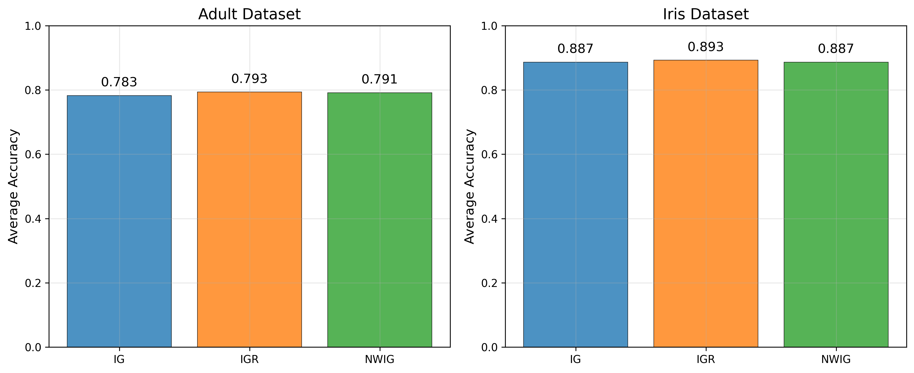
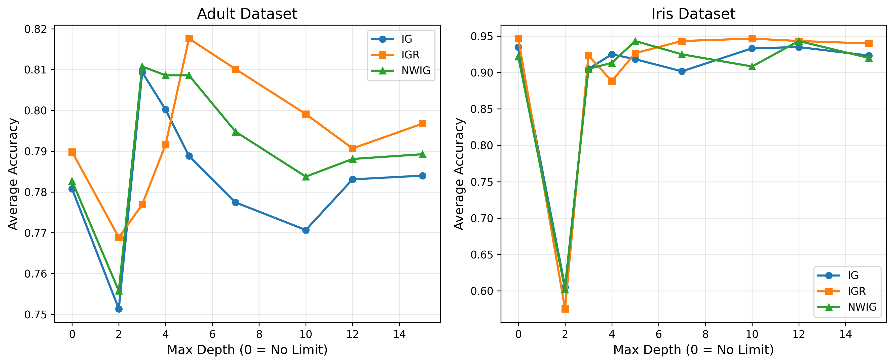
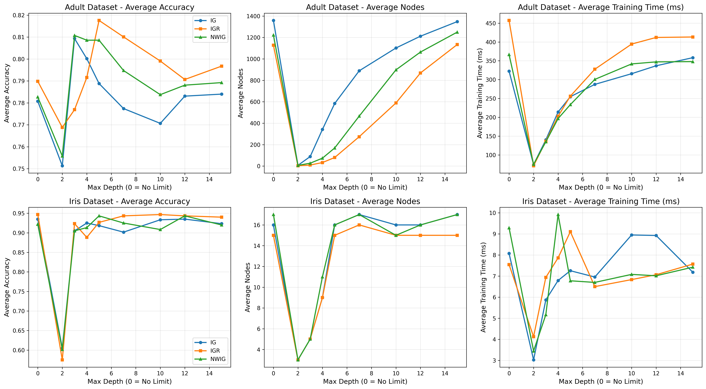
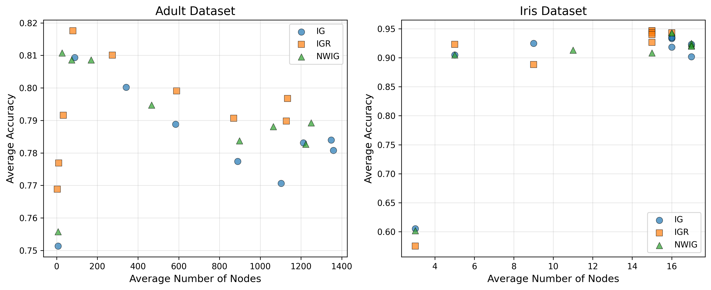
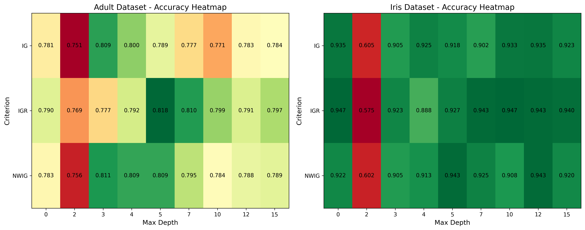
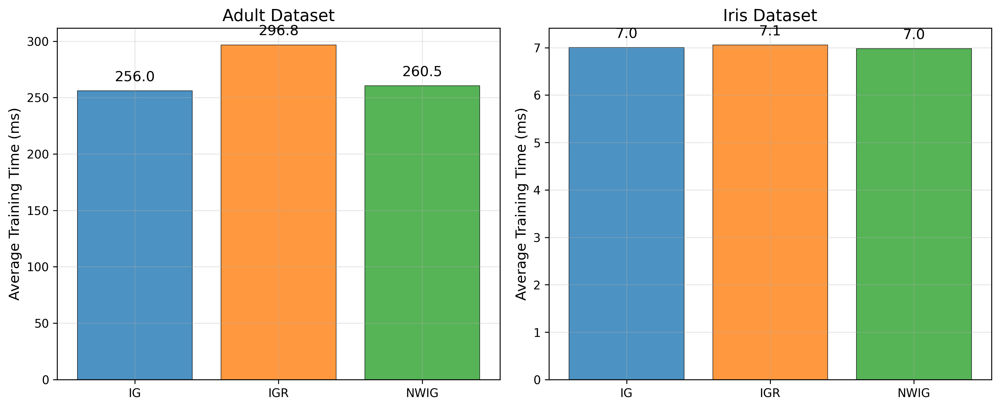

This report presents the analysis of decision tree algorithms implemented using the ID3 algorithm and its variants. The analysis covers different splitting criteria and their performance on two datasets: Adult and Iris.
The decision tree implementation includes:
Figure 1 shows the performance comparison of different splitting criteria across both datasets.

The results show that different criteria perform differently on different datasets. Information Gain Ratio (IGR) generally provides more stable performance by avoiding bias toward attributes with many values.
Figure 2 demonstrates how tree depth affects classification accuracy.

The analysis reveals that deeper trees generally achieve higher accuracy up to a certain point, after which overfitting may occur.
Figure 3 provides a detailed view of how depth affects performance across different criteria.

Figure 4 shows the relationship between tree complexity and accuracy.

This analysis helps identify the optimal balance between model complexity and performance.
Figure 5 provides a comprehensive view of performance across different parameters.

The heatmap visualization makes it easy to identify optimal parameter combinations.
Figure 6 shows the computational cost of different configurations.

Training time is an important consideration for practical applications, especially with larger datasets.
The experimental analysis demonstrates that the implemented decision tree algorithm works effectively across different datasets and configurations. The choice of splitting criterion and tree depth should be based on the specific characteristics of the dataset and the desired balance between accuracy and complexity.
The visualizations clearly show the performance patterns and help in making informed decisions about parameter selection. Future work could include implementing pruning techniques to further optimize the trade-off between accuracy and model complexity.